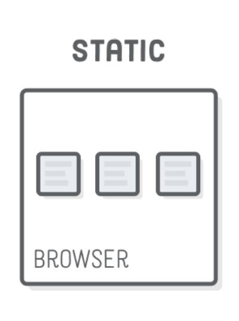
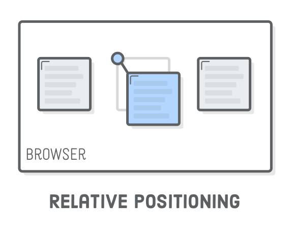
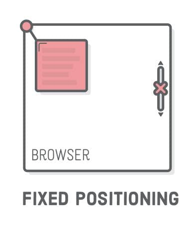

CSS 005定位position详解
转载 阮一峰 CSS 定位详解
CSS 有两个最重要的基本属性，前端开发必须掌握：display 和 position。
display属性指定网页的布局。两个重要的布局，我已经介绍过了：弹性布局flex和网格布局grid。
本文介绍非常有用的position属性。我希望通过10分钟的阅读，帮助大家轻松掌握网页定位，说清楚浏览器如何计算网页元素的位置，尤其是新引进的sticky定位。
一、position 属性的作用
position属性用来指定一个元素在网页上的位置，一共有5种定位方式，即position属性主要有五个值。
static
relative
fixed
absolute
sticky
下面就依次介绍这五个值。最后一个sticky是2017年浏览器才支持的，本文将重点介绍。
二、static 属性值
static是position属性的默认值。如果省略position属性，浏览器就认为该元素是static定位。
这时，浏览器会按照源码的顺序，决定每个元素的位置，这称为"正常的页面流"（normal flow）。每个块级元素占据自己的区块（block），元素与元素之间不产生重叠，这个位置就是元素的默认位置。

注意，static定位所导致的元素位置，是浏览器自主决定的，所以这时top、bottom、left、right这四个属性无效。
三、relative，absolute，fixed
relative、absolute、fixed这三个属性值有一个共同点，都是相对于某个基点的定位，不同之处仅仅在于基点不同。所以，只要理解了它们的基点是什么，就很容易掌握这三个属性值。
这三种定位都不会对其他元素的位置产生影响，因此元素之间可能产生重叠。
3.1 relative 属性值
relative表示，相对于默认位置（即static时的位置）进行偏移，即定位基点是元素的默认位置。


它必须搭配top、bottom、left、right这四个属性一起使用，用来指定偏移的方向和距离。

|
|
上面代码中，div元素从默认位置向下偏移20px（即距离顶部20px）。
3.2 absolute 属性值
absolute表示，相对于上级元素（一般是父元素）进行偏移，即定位基点是父元素。
它有一个重要的限制条件：定位基点（一般是父元素）不能是static定位，否则定位基点就会变成整个网页的根元素html。另外，absolute定位也必须搭配top、bottom、left、right这四个属性一起使用。

|
|
上面代码中，父元素是relative定位，子元素是absolute定位，所以子元素的定位基点是父元素，相对于父元素的顶部向下偏移20px。如果父元素是static定位，上例的子元素就是距离网页的顶部向下偏移20px。
注意，absolute定位的元素会被"正常页面流"忽略，即在"正常页面流"中，该元素所占空间为零，周边元素不受影响。
3.3 fixed 属性值
fixed表示，相对于视口（viewport，浏览器窗口）进行偏移，即定位基点是浏览器窗口。这会导致元素的位置不随页面滚动而变化，好像固定在网页上一样。

它如果搭配top、bottom、left、right这四个属性一起使用，表示元素的初始位置是基于视口计算的，否则初始位置就是元素的默认位置。
|
|
上面代码中，div元素始终在视口顶部，不随网页滚动而变化。
四、sticky 属性值
sticky跟前面四个属性值都不一样，它会产生动态效果，很像relative和fixed的结合：一些时候是relative定位（定位基点是自身默认位置），另一些时候自动变成fixed定位（定位基点是视口）。
因此，它能够形成"动态固定"的效果。比如，网页的搜索工具栏，初始加载时在自己的默认位置（relative定位）。

页面向下滚动时，工具栏变成固定位置，始终停留在页面头部（fixed定位）。

等到页面重新向上滚动回到原位，工具栏也会回到默认位置。
sticky生效的前提是，必须搭配top、bottom、left、right这四个属性一起使用，不能省略，否则等同于relative定位，不产生"动态固定"的效果。原因是这四个属性用来定义"偏移距离"，浏览器把它当作sticky的生效门槛。
它的具体规则是，当页面滚动，父元素开始脱离视口时（即部分不可见），只要与sticky元素的距离达到生效门槛，relative定位自动切换为fixed定位；等到父元素完全脱离视口时（即完全不可见），fixed定位自动切换回relative定位。
请看下面的示例代码。（注意，除了已被淘汰的 IE 以外，其他浏览器目前都支持sticky。但是，Safari 浏览器需要加上浏览器前缀-webkit-。）
|
|
上面代码中，页面向下滚动时，#toolbar的父元素开始脱离视口，一旦视口的顶部与#toolbar的距离小于20px（门槛值），#toolbar就自动变为fixed定位，保持与视口顶部20px的距离。页面继续向下滚动，父元素彻底离开视口（即整个父元素完全不可见），#toolbar恢复成relative定位。
五、 sticky 的应用
sticky定位可以实现一些很有用的效果。除了上面提到"动态固定"效果，这里再介绍两个。
5.1 堆叠效果
堆叠效果（stacking）指的是页面滚动时，下方的元素覆盖上方的元素。下面是一个图片堆叠的例子，下方的图片会随着页面滚动，覆盖上方的图片（查看 demo）。
HTML 代码就是几张图片。
|
|
CSS 代码极其简单，只要两行。
|
|
它的原理是页面向下滚动时，每张图片都会变成fixed定位，导致后一张图片重叠在前一张图片上面。 详细解释可以看这里。
5.2 表格的表头锁定
大型表格滚动的时候，表头始终固定，也可以用sticky实现（查看 demo）。

CSS 代码也很简单。
|
|
需要注意的是，sticky必须设在元素上面，不能设在和元素，因为这两个元素没有relative定位，也就无法产生sticky效果。详细解释可以看这里。
（正文完）
免费前端全栈课程
初学者刚接触前端，往往会被一大堆技术名词、框架和工具，搞得眼花缭乱。
到底哪些技术是目前的主流技术栈，既能用于公司的开发实务，又能为自己的简历增添亮点？
下面就是一套目前主流的前端技术栈。
（1）Node.js：服务器端的 JavaScript 运行环境，不管哪种前端开发，都必不可少的底层环境。
（2）Webpack：语法转换工具，把 ES6/TypeScript/JSX 语法转成浏览器可以运行的代码。
（3）Koa2：一个非常流行、简洁强大的 Node.js 后端的 Web 开发框架。
（4）MongoDB：目前应用最广泛的非关系数据库之一，功能丰富，用法较简单。
（5）Vue 全家桶：
Vue：前端基础框架
Vuex：配套的前端状态管理库。
Vue Router：官方的路由插件，构建单页面应用必不可少。
Vue CLI：脚手架工具，帮你快速上手 Vue 开发，无需再花多余时间去实现项目架构。
Vant：有赞前端团队开发的轻量级移动端 Vue 组件库，让你快速使用已经封装好的各种页面组件。
看到这个名单，你是不是感到有点头大，全部掌握它们需要多少时间啊？
现在，腾讯课堂就有一门这样的课程，内容包含了所有这些工具，教你怎么用它们从头完成一个全栈项目，亲手做出一个手机端的移动商城，是由 慕课网的精英讲师–谢成老师讲授 。
这个课程原价98元， 活动期间，只要1块钱哦！ 微信扫描下面的二维码，就可以领取优惠券，享受1元听课的福利。
该课程的制作单位是青盟科技。它是《腾讯课堂101计划》重点推广的优质机构，已有7年 IT 行业教学经验，培养收费学员2000+，有超过72%的学员都进入到名企大厂。如果你想了解课程的详细内容，获取课程大纲，或者想接受系统的前端培训，可以登录腾讯课堂查看"青盟科技"。